A consulta certa errou em US$ 3,5 milhões
No dbt Summit 2026, conferência da dbt Labs, dois arquitetos de soluções da AWS apresentaram uma consulta de receita que devolvia US$ 14,86 milhões. A resposta certa era US$ 11,36 milhões. O número parecia plausível e vinha 30,8% maior que o real. O exemplo foi montado para a palestra, e a consulta era de um agente de IA (dbt Labs, 2026).
O SQL fazia o que dizia fazer. As quatro regras de negócio que mudavam o número estavam escritas noutro lugar, num catálogo de definições que a consulta não usou:
- O valor somado era o bruto, anterior a desconto e reembolso;
- Os reembolsos ficavam numa tabela que não entrava no join;
- Pedidos cancelados e pendentes contavam como venda;
- As contas de teste eram marcadas, não excluídas.
Quatro perguntas seguram a sopa de letrinhas
Data warehouse, data lake, lakehouse, mesh, medallion, ETL, ELT, dentre outros. O vocabulário de arquitetura de dados parece uma lista de marcas, e cada conceito responde, antes de tudo, a uma de quatro perguntas:
- Onde o dado mora: o warehouse, o mart, o lake e o lakehouse;
- Como o dado flui: ETL, ELT e a arquitetura medallion;
- Quem cuida de cada pedaço: o time central ou os domínios do mesh;
- Como o dado se explica: a modelagem dimensional e as rivais, do centro normalizado à tabela larga.
A resposta das três primeiras perguntas muda a cada hype. A quarta atravessa todas: a resposta muda de forma, e a obrigação de declarar o que o dado significa nunca sai da conta. O leitor novo que chegou para cobrá-la, o agente de IA, fecha o artigo.
Data warehouse: o relatório não pode derrubar a venda
Primeira pergunta: onde o dado mora. O endereço mais antigo é o data warehouse. A definição clássica pede um conjunto de dados orientado por assunto, integrado, variante no tempo e não volátil, usado sobretudo para decisão (Chaudhuri e Dayal, An Overview of Data Warehousing and OLAP Technology, 1997).
Na prática, é o banco separado da operação. O sistema que atende o cliente faz transações curtas e repetitivas, e a análise faz consultas complexas sobre o histórico consolidado. Separar os dois melhora o desempenho de ambos (AWS). O dado entra por ETL: a limpeza acontece antes da escrita, e o esquema, o desenho de tabelas, colunas e tipos, é decidido antes de o dado chegar.

O que resolve:
- Separa a leitura analítica da escrita operacional, e as duas param de disputar recurso (AWS);
- Integra fontes diferentes num conjunto só, orientado por assunto (Chaudhuri e Dayal, 1997);
- Guarda o histórico que o sistema de origem descarta;
- Entrega dado limpo e estruturado, porque o esquema vem antes da escrita.
O que cobra, segundo quem propôs um sucessor, o lakehouse de três seções adiante:
Data mart: autonomia com juros
Um recorte menor do mesmo desenho é o data mart: um conjunto com o dado já processado para as perguntas de uma unidade de negócio, como vendas ou financeiro (AWS). O mart pode derivar do data warehouse central, nascer independente ou misturar as duas origens.
Para Bill Inmon, o warehouse corporativo vem primeiro, e a fonte correta do mart é ele, e somente ele (Inmon, A Tale of Two Architectures).
Já Ralph Kimball, o sistematizador da modelagem dimensional que a quarta pergunta vai visitar, aponta o caminho inverso: o warehouse se constrói mart a mart, um por processo de negócio, integrados por dimensões compartilhadas (Margy Ross, do grupo de Kimball, 2004).
Nenhum lado venceu: segundo um artigo do TDWI, a maioria das implementações grandes acabou híbrida (TDWI, 2026).

O que resolve:
- Dá à área autonomia sobre a própria carga e gestão, sem fila do time central (AWS);
- Permite controle de acesso fino, porque só o dado daquele assunto está ali;
- No tipo híbrido, serve para testar uma origem nova antes de levá-la ao centro (AWS).
O que cobra:
- O mart dependente herda a indisponibilidade do warehouse de origem (AWS);
- Marts independentes multiplicam processos de carga, e dois processos respondendo à mesma pergunta tendem a terminar em dois números.
Data lake: guarde agora, explique depois
O terceiro endereço nasceu na direção oposta. O data lake é um repositório que guarda qualquer dado, estruturado ou não, no formato em que chega e em qualquer escala (AWS). A inversão está na ordem entre esquema e escrita. O warehouse exige estrutura antes de gravar; o lake grava primeiro e cobra o esquema de quem lê. Por dentro, o dado não fica indistinto: a prática recomendada é segmentar em zonas conforme a prontidão, do pouso do arquivo cru ao conjunto curado (AWS Well-Architected).

O que resolve:
- Aceita o que o warehouse recusava: relacional e não relacional, de log de aplicação a mídia (AWS);
- Armazenamento de objeto barato, em qualquer escala (AWS);
- A pergunta pode aparecer depois do dado, porque o esquema só é cobrado na leitura;
- Sustenta aprendizado de máquina sobre o histórico bruto.
O que cobra:
- Sem catálogo que registre o que existe, vira um data swamp, o pântano onde nada é encontrado nem merece confiança, aviso do guia de arquitetura de quem o vende (AWS Well-Architected);
- O custo do esquema muda de lugar, e cada leitor paga um pouco dele;
- Consistência entre leitores depende de disciplina, porque cada um interpreta o cru por conta própria.
A linha do tempo guarda uma confissão. O lake foi a década que adiou a modelagem, o pântano foi o preço, e ela voltou porque fez falta.
Data lakehouse: a aposta de uma cópia só
O quarto endereço tenta parar de escolher. Em 2021, engenheiros ligados à Databricks definiram o data lakehouse como um sistema de gestão de dados sobre armazenamento barato e de acesso direto, com funções de banco analítico por cima: transação, versionamento, auditoria e otimização de consulta (Armbrust, Ghodsi, Xin e Zaharia, CIDR 2021). No desenho de referência do artigo, quem sustenta as garantias é uma camada de metadados, os dados sobre os dados, que diz quais arquivos formam cada versão de cada tabela. O mesmo texto conta a história em gerações. Primeiro o data warehouse, com esquema na escrita. Depois o lake, numa arquitetura de duas camadas, com o bruto no armazenamento barato e um recorte seguindo por ETL para o warehouse, envelhecendo no caminho. A aposta do lakehouse é servir, da mesma cópia do dado, o BI, os relatórios e painéis do negócio, e o treino de modelos de aprendizado de máquina.

O que resolve:
- Uma cópia do dado para o relatório e para o treino de modelos, sem exportar para um segundo sistema (Databricks);
- Transação, imposição de esquema e governança sobre o que antes era só arquivo (Databricks);
- Formato aberto, que deixa o dado legível sem passar pelo produto que o escreveu (Databricks);
- Na defesa dos autores, dispensa o ETL duplo e o dado defasado da arquitetura de duas camadas (CIDR 2021).
O que cobra:
- A medição de desempenho que acompanha a proposta é dos próprios autores, interessados nela (CIDR 2021);
- Cada fornecedor implementa a ideia com o próprio formato e o próprio catálogo, e é dentro deles que a promessa foi demonstrada;
- O desenho é novo o bastante para a própria definição ainda variar conforme quem a escreve.
De ETL a ELT: o custo trocou as letras de lugar
A segunda pergunta é como o dado flui da origem até o destino analítico. A resposta clássica é o ETL: extrair, transformar e carregar, nesta ordem. O dado sai do sistema de origem. A regra de limpeza e de negócio roda em trânsito. Só o resultado limpo é gravado no destino. Essa ordem existia por escassez: o destino era caro e rígido, e transformar antes de carregar reduzia o que chegava a ele (dbt Labs).
O ELT inverte as duas últimas etapas: extrair, carregar o bruto direto no destino e transformar lá dentro, com o motor do próprio destino, a capacidade de processamento que ele traz junto do armazenamento (AWS). A virada é datada pela IBM por volta de 2010. A IBM, que vende o armazenamento e o processamento que tornam o arranjo viável, credita a mudança ao aumento do volume de dado e à chegada da computação em nuvem, que trouxe armazenamento barato e escalável e capacidade de transformar em escala no próprio destino (IBM). Quando guardar deixou de ser o gargalo, adiar a transformação virou vantagem. O padrão pressupõe um destino com motor próprio, caso do warehouse de nuvem e do lakehouse.

O que resolve:
- Entrega mais rápida (IBM): a carga deixa de esperar a regra ficar pronta;
- O bruto fica disponível para vários usos, inclusive o que ninguém previu na hora da carga (IBM);
- A lógica pode ser refeita sem voltar à origem, iterando sobre o que já está carregado, ponto de quem vende ferramenta para esse arranjo (dbt Labs).
O que cobra:
- A despesa de armazenamento e de processamento pode escalar de forma imprevisível (IBM): é o preço de manter o bruto em cópia no destino;
- A segurança do dado não processado entra na conta (IBM): o sensível chega cru, e a proteção que o ETL aplicava antes da escrita passa a depender do destino;
- Dado regulado pede a ordem antiga na frente: mascarar o identificador sensível por ETL antes da carga e refinar por ELT depois, um híbrido com duas esteiras na conta, concessão de quem vende o lado do ELT (dbt Labs).
O saldo, na minha leitura, é que a praticidade venceu, e a conta ficou no destino: a cópia do bruto e cada transformação rodando no motor dele. Carregar o dado bruto e refinar depois também deixa estados diferentes do dado convivendo no mesmo lugar, e o medallion, logo abaixo, dá um lugar a cada estado.
Medallion: o preço de guardar o bruto e servir o limpo
Ainda na pergunta do fluxo, a arquitetura medallion organiza o lakehouse em três camadas por estado de prontidão (Databricks):
- A camada bronze guarda o dado exatamente como chegou da origem, e é a fonte para reconstruir o resto;
- A camada silver guarda o dado validado, limpo e deduplicado;
- A camada gold guarda o dado agregado e modelado para o consumo.
Gosto do medallion porque ele admite um conflito em vez de fingir que não existe: preservar o bruto para auditar e entregar o limpo para confiar são desejos opostos, e o padrão dá um endereço a cada um. E ele devolve a modelagem ao palco: a própria documentação diz que a camada gold é modelada segundo a regra de negócio, inclusive com modelagem dimensional (Databricks).

O que resolve:
- Um lugar previsível para cada estado do dado, com público por camada (Databricks);
- Reprocessar o histórico quando uma regra muda, porque o bronze é a fonte da verdade;
- Controle de acesso e otimização diferentes por camada.
O que cobra:
- É prática recomendada e adaptável, não requisito, e o custo de cada camada a mais fica com quem opera (Databricks);
- Cada camada acrescenta uma cópia e um salto de latência entre a origem e o consumo.
Data mesh: a fila do time central
O data mesh responde à terceira pergunta: quem cuida de cada pedaço do dado. Zhamak Dehghani o propôs ao criticar o lake monolítico, em que um time central de dados, dono de tudo e distante do negócio, vira fila conforme crescem as fontes e os consumidores. Os princípios dela, consolidados em 2020, são quatro (Dehghani, Data Mesh Principles and Logical Architecture, martinfowler.com, 2020):
- Propriedade por domínio: o time de negócio mais próximo do dado é dono dele, e o ecossistema cresce adicionando domínios autônomos;
- Dado como produto: cada domínio publica seus dados para serem encontrados, entendidos e confiados por quem consome;
- Plataforma self-service: uma infraestrutura comum esconde a complexidade técnica para os domínios trabalharem sozinhos;
- Governança federada: decisões locais dentro de regras globais de interoperabilidade, aplicadas de forma automatizada.
O sintoma que o motiva tem registro público com número. A Uber relatou um warehouse com mais de 16.000 datasets e 10 petabytes, vindos de vários domínios de negócio e operados por um único time: pico de consumo ou corrupção de metadados de um time derrubava cargas alheias, e a maioria dos times e serviços tinha acesso de leitura e escrita mais largo do que precisava. Mudança de acesso e resposta a incidente passavam pelo time central. A saída foi fatiar o banco por domínio, com acesso estrito em cada fatia (Uber Engineering, 2026). O relato não usa a palavra mesh, e leio o caso como um pedaço do diagnóstico aparecendo na prática: concentrar tudo num dono único não escalou, e o corte foi por domínio.

O que resolve:
- Tira o time central do caminho crítico de cada pedido (Dehghani, 2020);
- Escala por adição de domínios autônomos, em vez de inflar um gargalo;
- Aproxima o dono do dado de quem entende o negócio que o gera.
O que cobra:
- Gestão de mudança, gente qualificada em cada domínio e duplicação de dados e de esforço, segundo uma revisão sistemática de literatura cinzenta, feita sobre relatos de prática (Goedegebuure e colegas, arXiv);
- A governança federada devolve aos domínios, como negociação permanente, a coordenação que o centro pagava sozinho, leitura minha dos próprios princípios;
- A recepção ainda polariza, de manchete dando o mesh por morto a quem diz que é cedo para enterrá-lo (Analytics India Magazine).
Modelagem dimensional: o desenho que ninguém aposentou
Respondidas as três primeiras perguntas, sobra a que a IA vai cobrar: como o dado se explica. Esta seção e as três seguintes percorrem as respostas, da estrela desnormalizada ao centro normalizado, e de volta à tabela achatada que dispensa junção. A resposta mais duradoura é a modelagem dimensional, que Ralph Kimball sistematizou em 1996 no livro The Data Warehouse Toolkit (Kimball Group). A ideia separa as tabelas em dois papéis:
- A tabela fato guarda a medição de um evento do negócio, como o valor de uma venda;
- A tabela dimensão guarda o contexto que dá sentido à medida: quem comprou, o quê, onde, quando.
No desenho relacional, a tabela fato fica no centro e as dimensões em volta, cada uma em tabela única e desnormalizada: os atributos ficam juntos, repetindo valores quando preciso, para a consulta não atravessar tabelas. Kimball descrevia a estrutura como uma junção em estrela, o star join; star schema é o nome corrente (Kimball, A Dimensional Modeling Manifesto, 1997).
O método tem quatro passos, nesta ordem: escolher o processo de negócio, declarar o grão, identificar as dimensões e identificar os fatos (Kimball Group). O grão vem antes de qualquer coluna porque diz o que uma linha da tabela fato significa. Numa fato de vendas com grão de um item por pedido, cada linha é um item vendido, e a pergunta sobre qual produto saiu mais tem resposta direta. Se o grão fosse o pedido inteiro, a mesma tabela não saberia responder.
Quando os processos se multiplicam, as estrelas se ligam pelas dimensões compartilhadas: a mesma dimensão de cliente servindo à fato de vendas e à de entregas é o que permite cruzar as duas. Um desenho assim, com várias fatos e dimensões em comum, também circula com nome próprio, galaxy schema, com definições que variam conforme o autor (Wikipedia).

O que resolve:
- Estrutura que o usuário final entende e navega, com consultas de comportamento previsível, defesa do próprio Kimball (Kimball, 1997);
- Integração entre processos pelas dimensões compartilhadas;
- O grão declarado vira contrato: toda linha significa a mesma coisa.
O que cobra:
- Manter a integridade ao carregar de sistemas diferentes é difícil, e o desenho fica rígido quando o processo de negócio muda (Wikipedia);
- A técnica nasceu da observação da prática, sem base teórica nem teste empírico, avaliação de Moody e Kortink em 2000 (Moody e Kortink);
- Declarar grão e dimensões antes de conhecer todas as perguntas é trabalho antecipado, que times em descoberta adiam.
Snowflake schema: a ordem que custa junções
O snowflake schema é a variação que normaliza, ou seja, elimina a repetição quebrando a dimensão em tabelas menores: produto, subcategoria e categoria, separados e ligados por chaves. A hierarquia fica explícita no desenho, e a repetição sai das tabelas normalizadas. Em troca vêm mais tabelas e mais joins por consulta, com desempenho tipicamente pior (Oracle). O próprio Kimball escreveu em 1997 que o snowflaking não contraria a modelagem dimensional quando melhora compreensão e desempenho, e avaliou, no mesmo texto, que costuma prejudicar a navegação e a legibilidade (Kimball, 1997). No consumo, a recomendação da Microsoft segue a mesma direção: em geral os benefícios da dimensão em tabela única superam os da normalizada (Microsoft Learn).
3FN e Inmon: primeiro o centro, depois os marts
Do outro lado da disputa fica a escola que normaliza o centro. Na abordagem de Bill Inmon, constrói-se primeiro um warehouse corporativo único, integrado e granular, em modelo relacional normalizado, e dele derivam os marts (Inmon, A Tale of Two Architectures). Terceiros resumem essa forma como terceira forma normal (3FN), o desenho clássico em que cada atributo depende só da chave, a coluna que identifica a linha; o próprio Inmon a descreve como normalizada com leve desnormalização, com os marts de consumo em estrela, no estilo de Kimball (Inmon). Como a seção do mart registrou, a prática acomodou as duas escolas.
O que resolve:
- Uma versão única e integrada da verdade corporativa, antes de servir cada departamento (Inmon);
- Histórico granular e governança centralizados;
- O centro normalizado evita a redundância que a estrela aceita.
O que cobra:
- Valor que chega tarde, porque a integração vem antes do primeiro relatório, avaliação de um artigo do TDWI (TDWI, 2026);
- Normalizar no centro e dimensionalizar no consumo duplica ETL e armazenamento, crítica do lado Kimball (Ross, 2004);
- Integração é a parte mais difícil, e o próprio Inmon a trata como esforço de longo prazo (Inmon).
One Big Table: disco é barato, engenheiro não
A One Big Table (OBT) é a tabela única, larga e desnormalizada, com fato e dimensões já juntados de antemão, consultada sem join. Um registro cedo do debate é um fórum de engenharia analítica perguntando, em 2019, se a modelagem de Kimball ainda era relevante num warehouse moderno (fórum da dbt). O argumento econômico registrado ali: com o warehouse na nuvem e o armazenamento em colunas, guardar valor repetido ficou barato, e o tempo de engenheiro, caro.
O que resolve:
- Consulta sem junções, mais rápida num teste publicado por uma fornecedora de pipelines: de 25% a 49% conforme o warehouse, com resultado misto num deles (Kaminsky, Fivetran, 2022);
- Tabela plana que o usuário de negócio lê sem mapa.
O que cobra:
- No pior caso do mesmo teste, sem compressão de coluna ajustada, o disco foi de pouco mais de 30 GB com a estrela para mais de 90 GB com a tabela larga (Kaminsky, Fivetran, 2022);
- O significado se dilui na tabela gigante, e achar a coluna certa vira o novo problema, queixa registrada no fórum do debate (fórum da dbt);
- Cada pergunta nova tende a gerar outra tabela larga, e a mesma lógica passa a viver em várias.
O detalhe que me interessa está no fecho do próprio teste: o autor sugere manter a estrela nas etapas de transformação e gravar a tabela larga pronta por cima, para o usuário final consultar sem junções (Kaminsky, Fivetran, 2022). A estrela continua no desenho, uma camada abaixo de quem consulta.
O agente não pergunta o que a tabela quer dizer
Até aqui, o leitor final do dado era uma pessoa, com um analista por perto para desfazer ambiguidade. A novidade é o agente como leitor. E o agente não é um analista mais rápido, é um leitor sem o contexto tácito que o analista carrega. Dustin Dorsey, diretor de engenharia de dados numa consultoria parceira da dbt Labs, argumenta, sem medição, que a prova de conceito com IA funciona porque roda num perímetro onde anos de uso humano já impuseram o significado. Em produção o perímetro some. A mesma pergunta passa a ter várias respostas tecnicamente válidas, o modelo escolhe uma delas, e a inconsistência que sai é defensável, difícil de perceber. A década que centralizou onde o dado vive deixou de fora o que ele representa (Dorsey, blog da dbt Labs, 2026).
Há um número para o tamanho do problema, relatado na mesma palestra da AWS que abre este artigo: num benchmark de consultas reais de warehouse corporativo, coautorado por pesquisadores da AWS, agentes de ponta acertaram 10,8% (dbt Labs, 2026).
A resposta que o mercado testa é a semantic layer, a camada semântica: declarar métrica, dimensão e relação entre tabelas uma única vez, fora da ferramenta de consumo, e deixar pessoas e agentes consultarem a definição em vez de reescrevê-la a cada consulta (documentação do dbt). O dbt é uma ferramenta de transformação de dados, e a fabricante dele vende uma implementação da camada: os números de efeito vêm de quem tem interesse neles, e ainda assim desenham uma direção. Num benchmark interno da dbt Labs, sem método divulgado, um analista de IA ancorado na semantic layer acertou de 96% a 100% das perguntas, contra 80% a 91% escrevendo SQL cru (dbt Labs, 2026).
Numa consultoria que mediu um agente de analytics contra perguntas de gabarito, específicas a ponto de dois analistas escreverem o mesmo SQL, a acurácia foi de 0% sem contexto semântico a 94,7% com as camadas de contexto somadas, das tabelas modeladas às métricas nomeadas e consultas verificadas, sem trocar de modelo (Data Culture, blog da dbt Labs, 2026). Nenhum desses números isola a modelagem: eles medem contexto empilhado, das tabelas modeladas às consultas prontas.
O catálogo de definições da abertura era exatamente isso, uma semantic layer: as quatro regras dos US$ 3,5 milhões moravam nela, declaradas e ignoradas pela consulta. A camada, porém, precisa de matéria-prima. O grão declarado e a relação explícita vêm da modelagem, e é sobre eles que a métrica ganha definição única e dona. É o argumento de Dorsey para tratar fatos e dimensões como o mecanismo que torna o significado legível para a IA (Dorsey, 2026). A exigência que o BI tolerava por décadas, porque havia gente para compensar, virou, na minha leitura, pré-requisito.
Arquitetura tem que ter propósito
Onde o dado mora, como ele flui e quem cuida dele são decisões de plataforma e de organização, e as duas passam. Como o dado se explica é decisão de modelagem, e essa nenhuma geração conseguiu aposentar. A estrela segue viva, da camada de transformação à gold do medallion. A tabela larga serve o consumo sem junção. E do centro normalizado de Inmon à tabela, toda resposta depende de entidade, relação e definição declarados para continuar dizendo a mesma coisa. O que fica da modelagem é o que ela obriga a declarar.